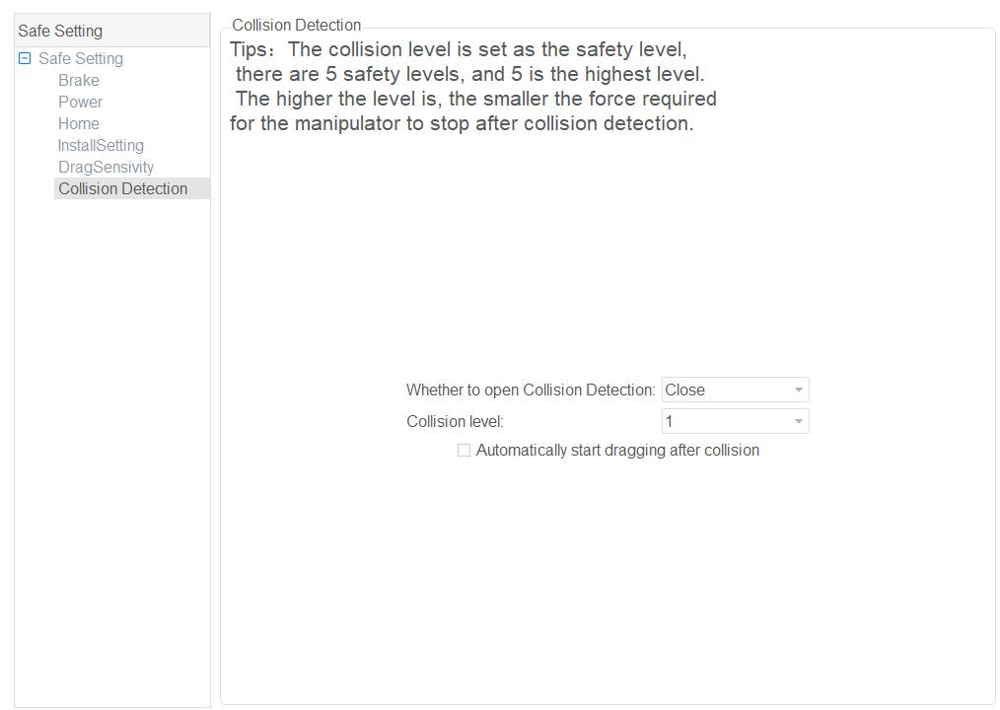
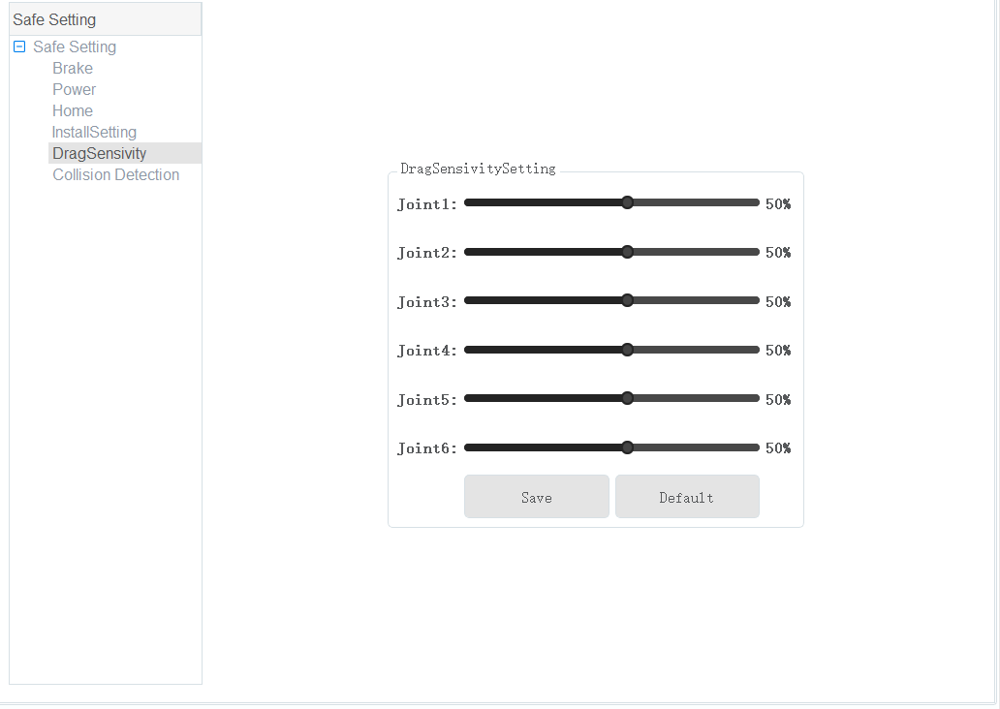

Safe Setting
Brake
If you want to drag joints by hand, please enable the braking function. Namely, open each joint brake on the Parameter > SafeSetting > Brake page.

Warning
Deactivating a joint’s brake will cause the distal linkages to fall due to gravity. Make sure you’re holding the robot to prevent harm to the robot and to any nearby equipment.
Power
When the emergency stop switch is pressed, the robot will power off. You can click Power on the Parameter > SafeSetting > Power page to power on the robot.

Collision Detection
Collision detection is mainly used for reducing the impact on the robot arm, and to avoid damage to the robot arm or external equipment. If collision detection is activated, the robot arm will stop running automatically when the robot detects that it has collided with an object.
You can enable collision detection function on the Parameter > SafeSetting > Collision Detection page and set the collision level. You can also enable the Automatically start dragging after collision option. This will allow you to drag the robot to a safe position after it collides with an obstacle.
There are five levels to select. The higher the level, the higher the sensitivity to collisions.
Electronic Skin
Electronic skin allows robot to respond in real time when robot meets an obstacle, helping the robot avoid obstacles during operation.
You can enable electronic skin function on the Parameter > SafeSetting > Electronic Skin page and set the robot status when meeting an obstacle. For example, the robot can avoid the obstacle or stop running. You can also set the electronic skin parameters on this page.
|
Home
After some parts (motors, reduction gear units) of the robot have been replaced or the robot has been hit, the origin of the robot will be changed. You need to reset the origin. Put the robot in the original position where the keyways of the adjacent joints are aligned, enable robot motor, and click the 0 button.
Note
Your authority level must be Administrator to perform this operation.
InstallSetting
If the robot is ceiling mounted, wall mounted or mounted at an angle, you need to set the rotation angle and slop angle while the robot is in its disabled state.
- Slop angle: Angle that robot rotates counterclockwise around X-axis at the origin point.
- Rotation angle: Angle that robot rotates counterclockwise around Z-axis at the origin point.
DragSensitivity
The Drag Sensitivity parameters are used to adjust the sensitivity of the joints of the robot arm during running or dragging. You can set these parameters on the Parameter > SafeSetting > DragSensitivity page, and click Save, as shown in the image below.
